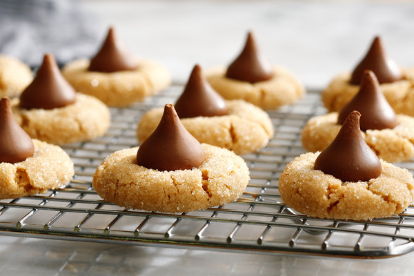

Peanut Butter Kiss Cookies

Description
These peanut butter kisses are deliciously simple, fast, and easy!
Ingredients
- 1 cup white sugar
- 1 cup peanut butter
- 1 egg
- 18 milk chocolate candy kisses, unwrapped
Steps
- Preheat the oven to 350 degrees F (175 degrees C).
- Stir together sugar, peanut butter, and egg in a mixing bowl until well combined.
- Shape dough into 1-inch balls and place on an ungreased cookie sheet. If dough is too sticky, refrigerate until easy to handle, about 30 minutes.
- Bake in the preheated oven until edges are set, about 10 minutes.
- Press a chocolate kiss into the center of each warm cookie and cool on a wire rack.